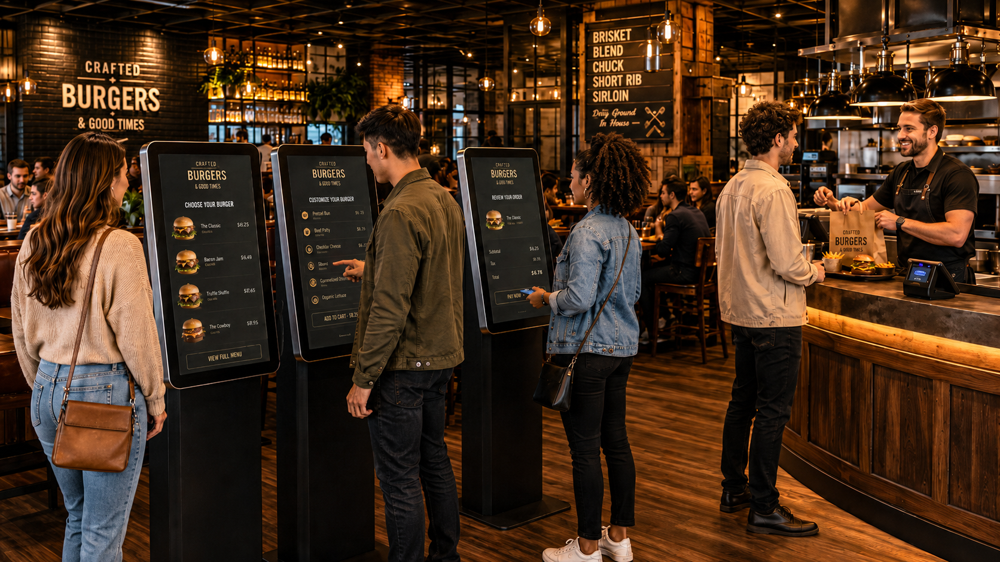

Remove counter pressure, present your menu beautifully, and let smart upsells do the work — so customers spend more every order, and your team focuses on great service.
10–30% AOV uplift · Go live in 5 days · Fully branded to your venue

Research consistently shows that customers ordering via kiosk spend more than those ordering at the counter — driven by the time to browse, visual menu presentation, and the removal of social pressure. Read the research ›
Watch a real QJumper kiosk in action — from the idle screen through menu browsing, item customisation, upsell prompts, and checkout. Exactly as your customers would experience it.
A complete self-ordering experience designed to perform beautifully for customers and connect seamlessly to your operation.
Customers browsing a digital menu without counter pressure spend more. QJumper kiosks present your menu visually and surface relevant upsells at the right moment — consistently, every order.
High-quality imagery and clear item descriptions. Your food looks as good on screen as it does on the plate — driving appetite, increasing confidence, and reducing order hesitation.
Multiple customers can order simultaneously. Kiosks absorb demand during peak periods so your counter staff can focus on food preparation and service — not taking orders.
Kiosk orders flow directly into QJumper POS in real time — no manual entry, no delays, no errors. One kitchen display, one order stream, one system.
Card, contactless, and mobile wallet payments built in. No separate terminal required. Fast, secure, and familiar for customers.
Loyalty recognition built into the kiosk flow. Customers earn and redeem points at the kiosk — the same loyalty programme that powers your mobile app and web ordering.
They're greeted by a visually engaging idle screen — your branding, photography, and promotions front and centre.
Your menu is presented with imagery, descriptions, and contextual upsells. Customers take their time — and order more.
Card, contactless, or wallet. Fast, frictionless checkout with a printed or digital receipt.
The order hits the kitchen display instantly — the same stream as every other channel. No manual relay, no errors.
QJumper Kiosks connect directly to your POS so orders flow as one unified stream — no middleware, no manual entry, no end-of-day reconciliation.
Book a 30-minute demo and we'll show you the kiosk running a real menu, with upsells, branding, and payments — exactly as your customers would experience it.
We'll be in touch within one business day. No obligation.